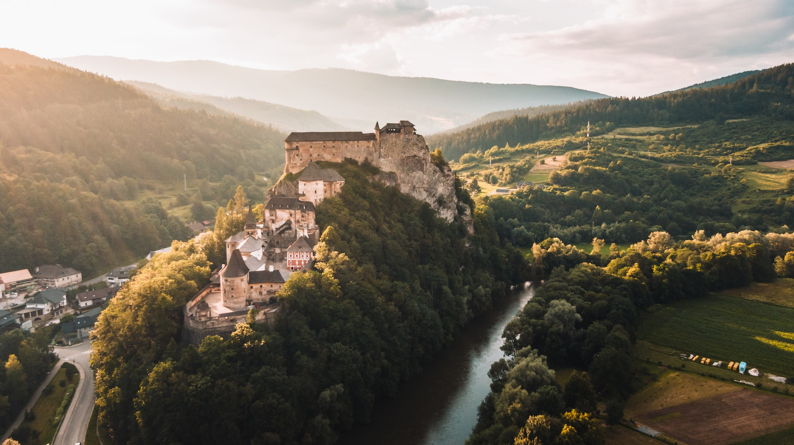
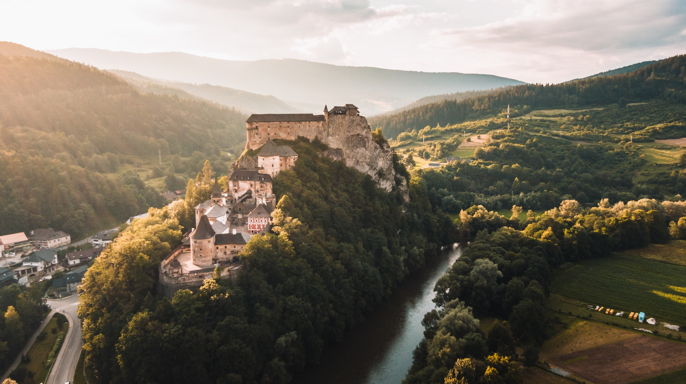
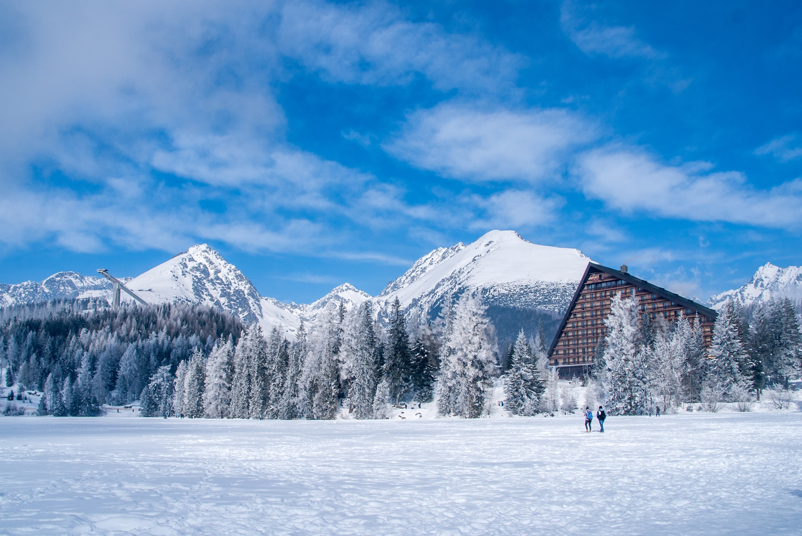
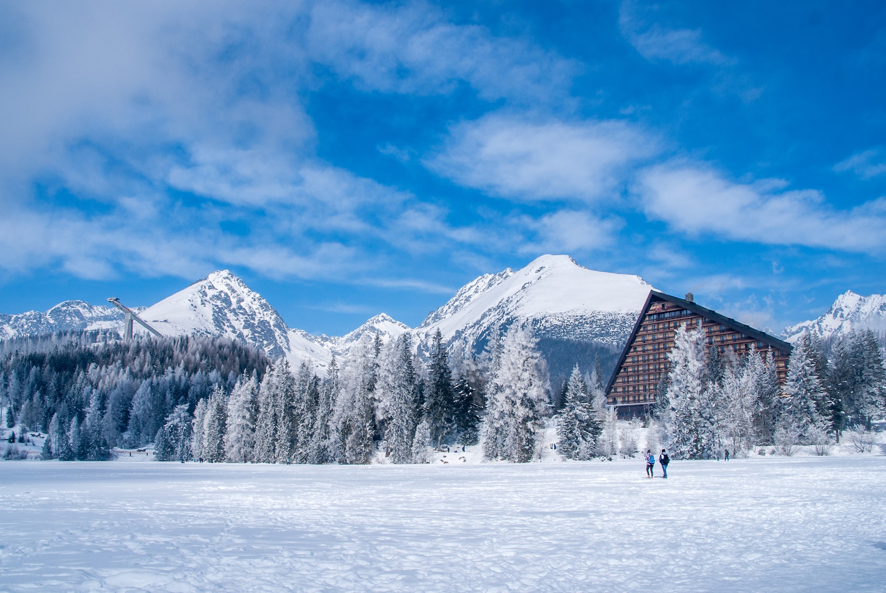
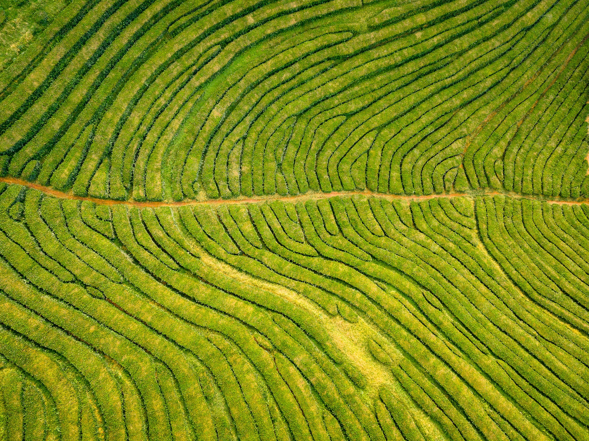
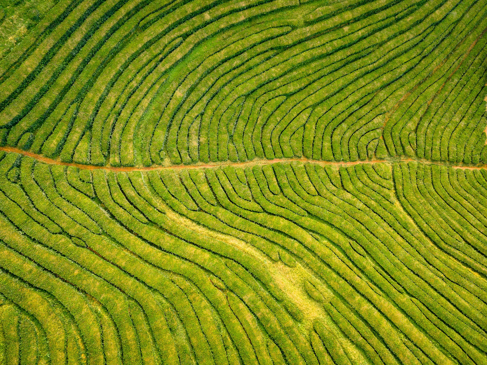

Mici
Mici, Romania's beloved street food, are skinless sausages made from a mixture of minced meat, garlic, and spices. Grilled to perfection, they boast a juicy, flavorful taste. Served with mustard and fresh bread, mici are a culinary delight and a testament to Romanian culinary ingenuity.
Where History Meets Natural Beauty
Traveling in Romania offers a unique blend of history, natural beauty, and vibrant culture. Explore medieval castles, picturesque villages, and the stunning Carpathian Mountains. Taste traditional cuisine, such as sarmale and mămăligă, and witness the warm hospitality of the locals. Romania is a captivating destination for every traveler.


 

 



 
